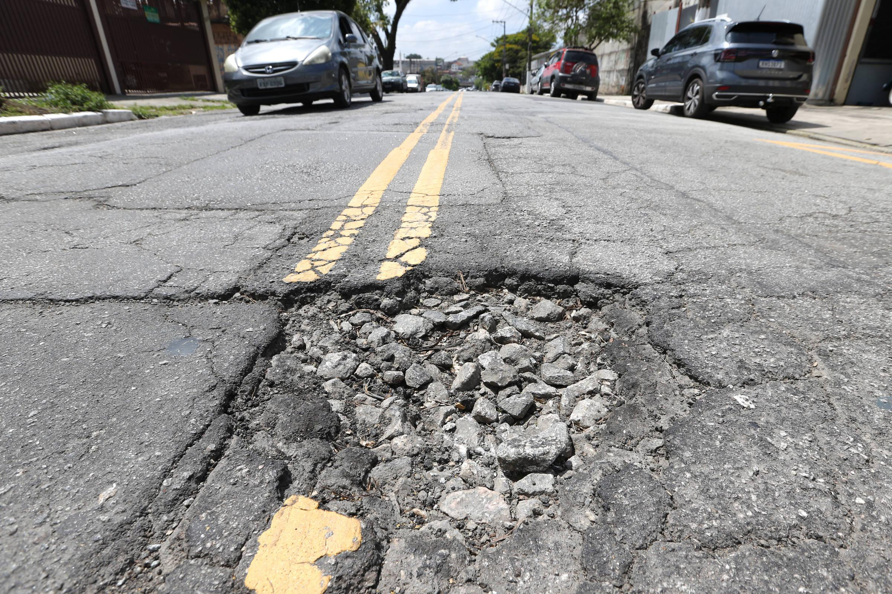
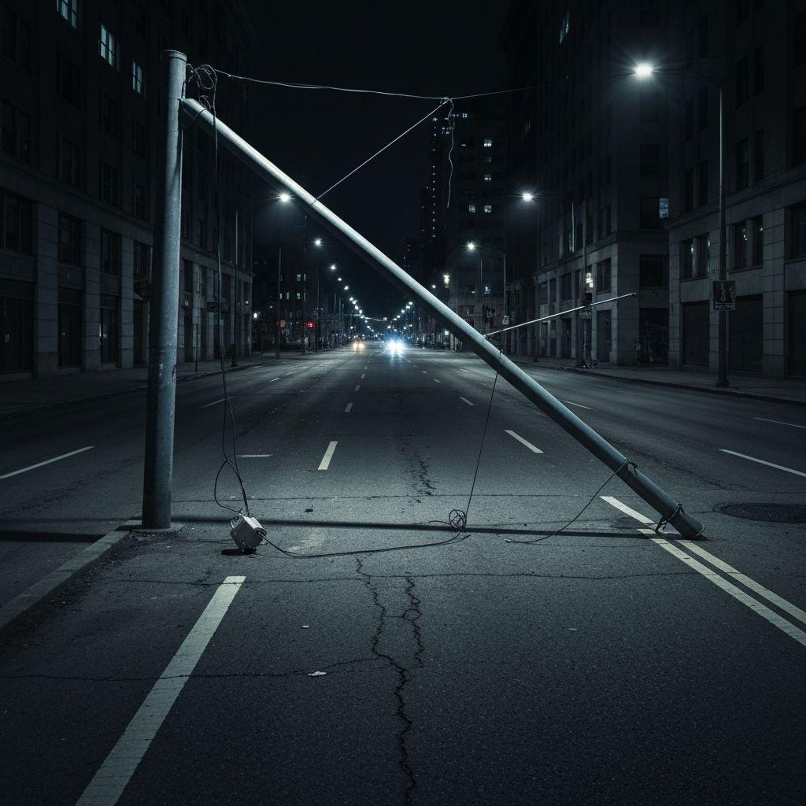
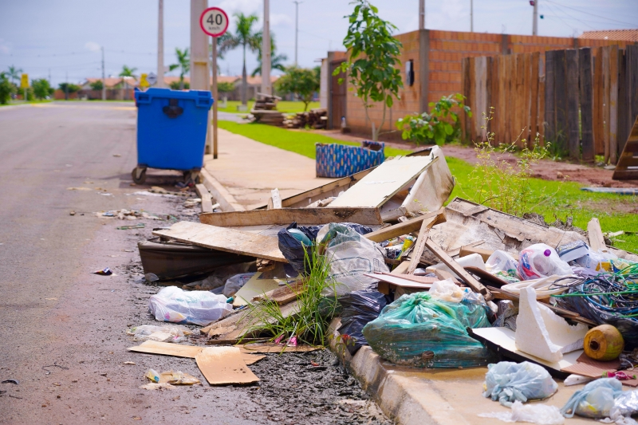
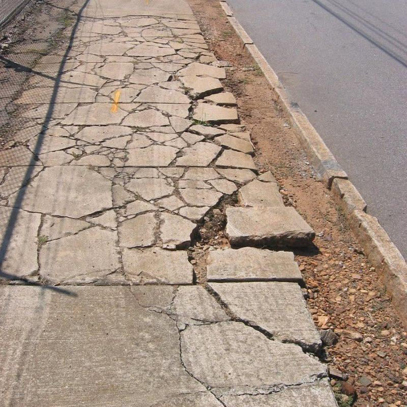
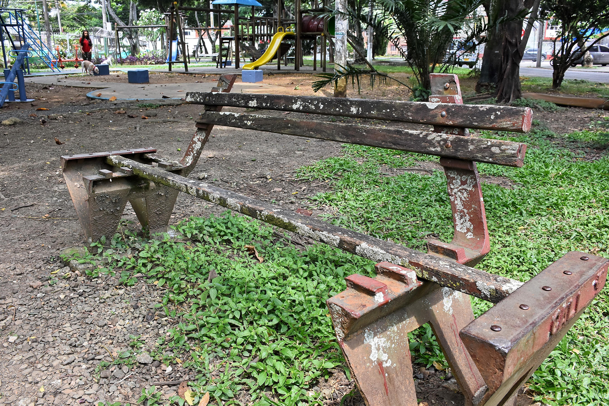

Uma cidade melhor começa com você!
Um canal direto entre você e a prefeitura. Registre problemas urbanos, acompanhe solicitações e ajude a transformar sua cidade.
Registrar ocorrência Consultar protocolo Dúvidas frenquentes
Um canal direto entre você e a prefeitura. Registre problemas urbanos, acompanhe solicitações e ajude a transformar sua cidade.
Registrar ocorrência Consultar protocolo Dúvidas frenquentes

BURACOS NAS RUAS
Informe buracos e danos no asfalto da sua rua. Lembre-se de fotografar bem o dano, registrar o problema e adcionar a localização.

POSTES SEM LUZ
Avise sobre postes com lâmpadas queimadas ou falta de iluminação. Locais escuros ou mal iluminados aumentam o risco de crimes e risco de acidentes.

LIMPEZA URBANA
Informe locais com lixo jogado nas ruas. O acúmulo de lixo atrai ratos, baratas, moscas e escorpiões, que transmitem doenças graves à população.
PIXAÇÕES E VANDALISMO
Informe locais pichados e situações de vandalismo urbano. Limpeza e restauração de muros, fachadas, exigem dinheiro público, recursos que poderiam ser investidos em saúde, educação ou infraestrutura.

CALÇADAS E ACESSIBILIDADE
Calçadas quebradas geram riscos graves à segurança física dos pedestres e acarretam multas financeiras altas e processos judiciais para os proprietários dos imóveis.

PRAÇAS E ESPAÇOS PÚBLICOS
Informar a existência de bancos, brinquedos danificados e problemas de conservação em espaços públicos é fundamental para garantir a segurança física dos frequentadores e evitar que se tornem problemas estruturais.